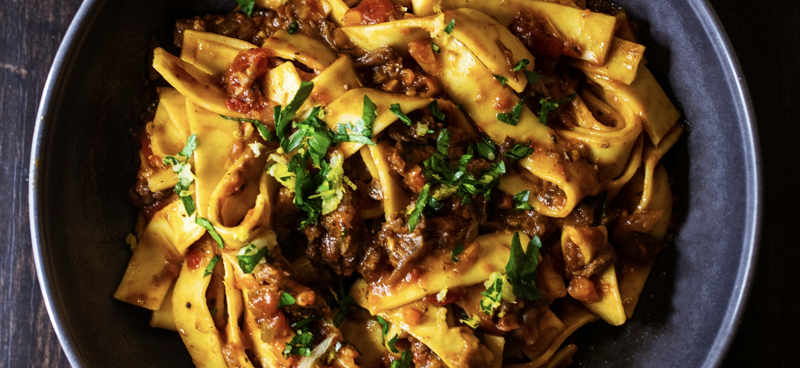

Schnelle Bolo
Beschreibung
Rezept für Nudeln mit Tomatensoße und Hackfleisch. Für eine originale Bolognese fehlen hier ein paar Zutaten, deshalb "schnelle Bolo".
Tipp: Verwende hochwertige Nudeln sowie passierte Tomaten von guter Qualität (mind. Mutti). Zum garnieren frischer Basilikum.
Zutaten für 2 Portionen:
- 200 g Nudeln deiner Wahl
- 2 fein gehakte kleine Zwiebeln
- 1 gehakte Knoblauchzehe
- 400 g Rinderhackfleisch
- 400 g passierte Tomaten
- 1 EL Tomatenmark
- Olivenöl
- Rapsöl
Gewürze
- Salz
- Schwarzer Pfeffer
- Zucker
Zubereitung:
- Hackfleisch in etwas Rapsöl scharf anbraten und mit Salz und Pfeffer abschmecken.
- Das Hackfleisch aus dem Topf nehmen hitze reduzieren, gehakte Zwiebeln in den Topf geben, in dem das Hackfleisch angebraten wurde, und mit Olivenöl glasig werden lassen.
- Nun den gehakten Knoblauch hinzugeben leicht anrösten und kurz darauf Tomatenmark hinzugeben und verrühren
- Mit passierten Tomaten ablöschen,das Hackfleisch hinzugeben und auf niedriger Hitze köcheln lassen
- Jetzt Nudeln in salziges (nach meerwasserschmeckendes) Wasser geben und aldente kochen.
- Währrend die Nudeln kochen, kann die Soße mit Pfeffer und Zucker abgeschmeckt werden
- In den letzten zwei Minuten einen kleinen Schöpfer Nudelwasser in die Soße hinzugen
- Gericht kann serviert werden.
Back to the Recipies